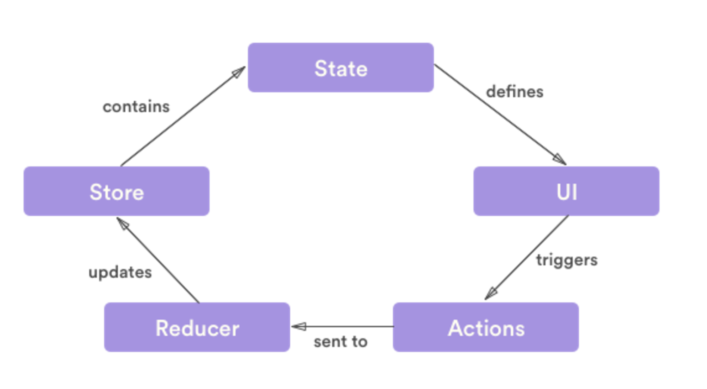
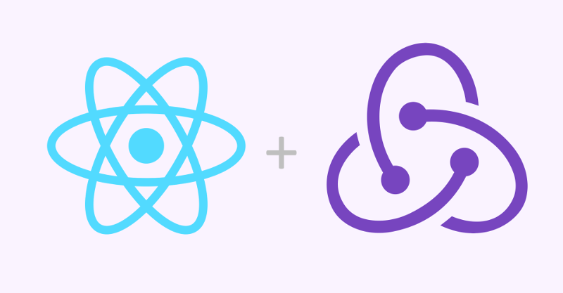
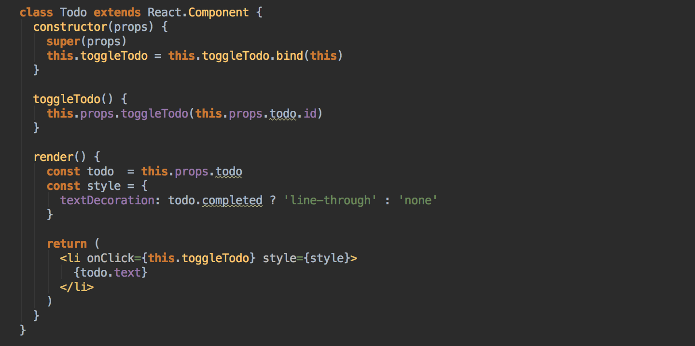
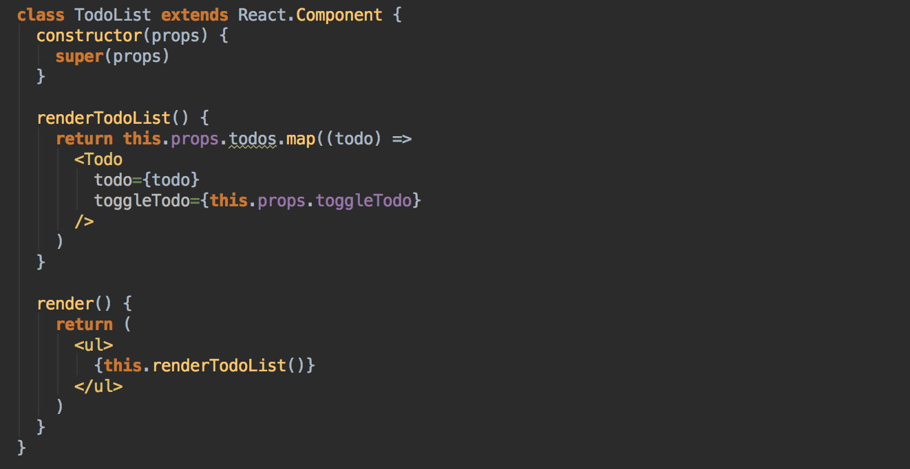
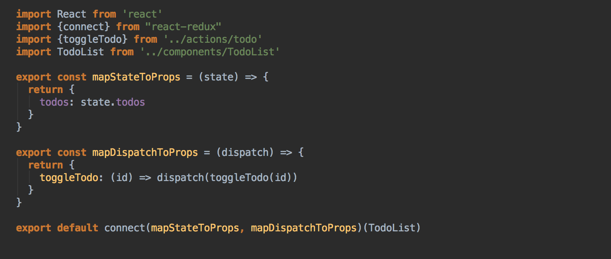

Data/State management in SPA
Patterns
- No framework (imperative)
- Framework based pattern
No framework pattern (imperative)
- Do it yourself
Framework based pattern
- BackboneJS
- AngularJS
- Flux
Backbone JS

Angular JS
- Using $rootScope
- Using angular factory

Flux

Flux is really just a fancy term for pub/sub architecture,
i.e. data always flows one way through the application and
it is picked up along the way by various subscribers (stores)
who are listening to it.
Why Flux
- State is messy
- Unidirectional data makes for easy debugging
View
- Reflects current state of the application on DOM
- Fires actions on external or user input
- Listens to store for any change in the application state
Action
- Consists of a unique identifier which defines that action
- Action carries payload, if needed
Store
- Holds state of the application
- More than just a model
- Triggers itself when there is any change in the state of the application.
Redux
Redux is a predictable state container for JavaScript apps.
Why Redux?
Advantages
- Single source of truth
- State is read-only
- Changes are made with pure functions called REDUCERS
Redux way of working

Let's design a TODO Application
In Angular JSLet's design a TODO Application
InFirst, let's design application state.
In Redux, all the application state is stored as a single object.
{
todos: [
{
text : 'Consider using Redux',
id : 1,
completed: false
},
{
text : 'Keep all state in a single tree',
id : 2,
completed: false
}
]
}
Now, let's define some actions.
Actions are payloads of information that send data from your application to your store.
const ADD_TODO = 'ADD_TODO'
const TOGGLE_TODO = 'TOGGLE_TODO'
function addTodo(text) {
return {type: ADD_TODO, text}
}
function toggleTodo(index) {
return {type: TOGGLE_TODO, id}
}
Define reducers
Reducers specify how the application's state changes in response to actions sent to the store
Basic Principle
(previousState, action) => newState
Writing a reducer
function todoApp(state = [], action) {
switch (action.type) {
case ADD_TODO:
return [
...state,
{
text : action.text,
id : Math.random(),
completed: false
}
]
case TOGGLE_TODO:
return state.map((todo) => {
if (todo.id !== action.payload.id)
return todo
return {...todo, completed: !todo.completed}
})
default:
return state
}
}
Dispatching Actions
import {addTodo} from "../actions";
// Dispatch add todo action
store.dispatch(addTodo("Create a Redux App"))
// Updated redux state
{
todos: [
{
text : "Create a Redux App",
id : 1,
completed: false
}
]
}
Dispatching Actions
import {toggleTodo} from "../actions";
// Dispatch add todo action
store.dispatch(toggleTodo(1))
// Updated redux state
{
todos: [
{
text : "Create a Redux App",
id : 1,
completed: true
}
]
}
That's all
Connecting Redux with React
Todo component
TodoList component
Todo Container
Q & A
Return to agenda